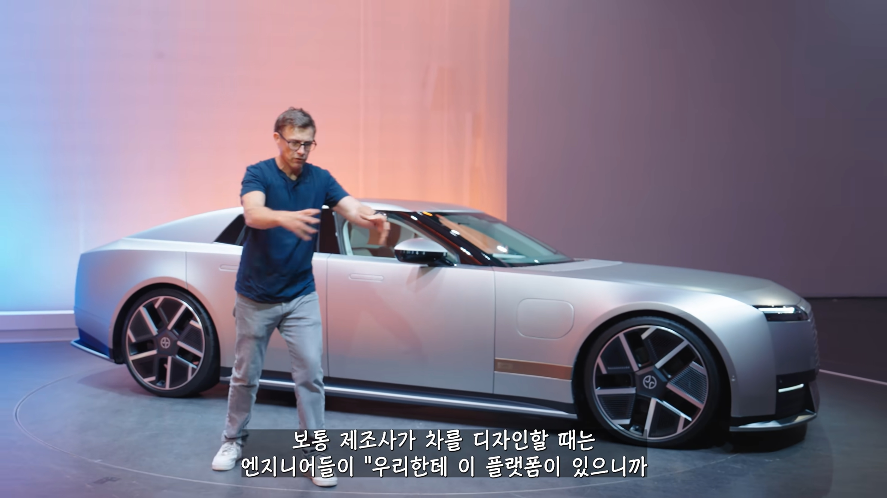
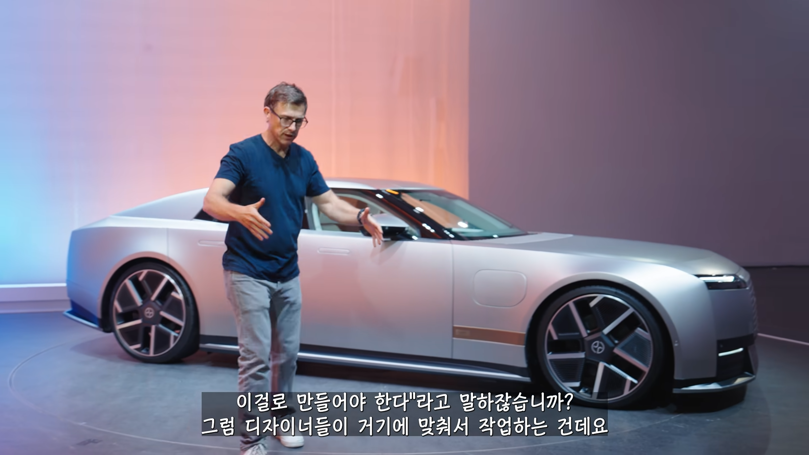
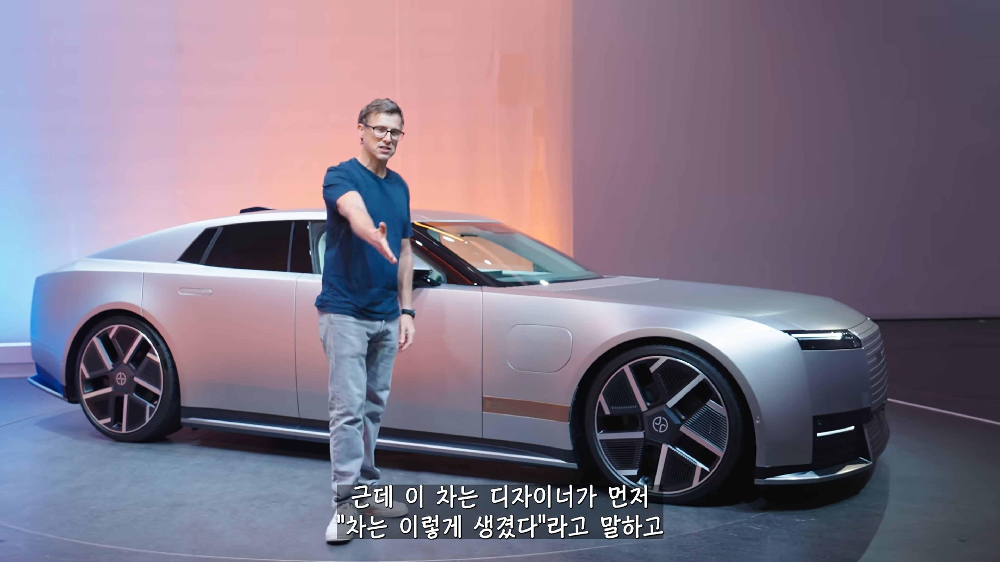
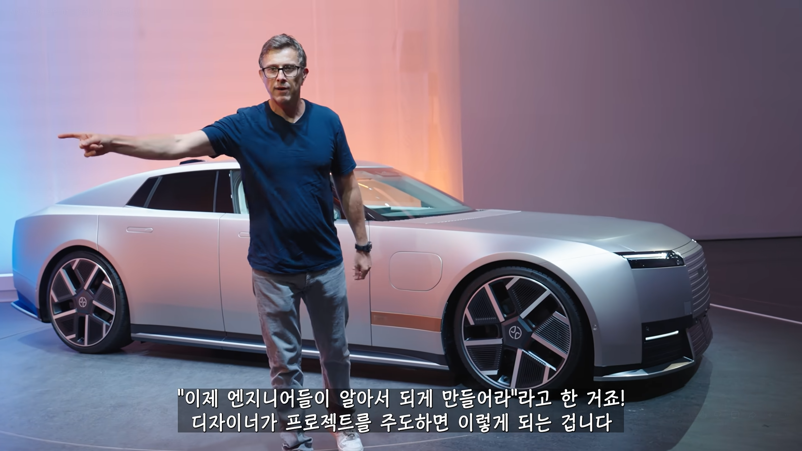
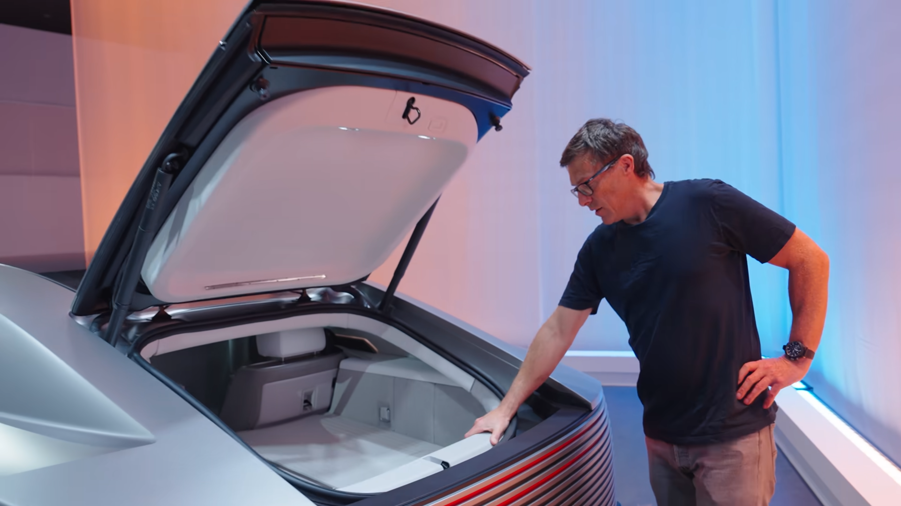

"이게 미래의 디자인이야"
"이걸 이해 못한다면 네가 뒤처진거야"
이딴 마인드 가지고 디자인 좆박아버림
자동차뿐만이 아니라 패션업계에도 적용 가능
유행은 소비자(대중)이 선택함으로서 만들어나가는건데
언젠가부터 디자인하는 새끼들이 하나같이 죄다 좆같이 만들어놓고
지들이 유행을 선도해나가는양 부심가지고 발악하는게 보임
그렇게 나온 결과물





전장 5,243mm짜리 차 트렁크 용량이 450L
제네시스 G90 전장 5,275mm
아반떼 CN7 트렁크용량 474L
유행을 대중이 선택하는경우도 있다인거지
대부분은 패션업계가 주도함
대표적인 예가 유행하는 컬러(미리 지들끼리 짜고 정해놓고시작)